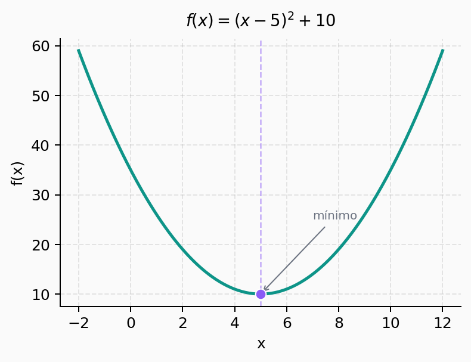
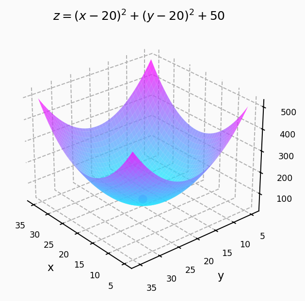

Introdução
Vamos começar com alguns exemplos de funções, particularmente uma função quadrática no plano cartesiano e uma função em três dimensões, que são dadas respectivamente por
\[ f(x) = (x - 5)^2 + 10 \]
e
\[ z = (x - 20)^2 + (y-20)^2 + 50 \]
Abaixo temos os gráficos dessas funções:


Note que ambas são contínuas, suaves e convexas, ou seja, possuem um único mínimo global. O objetivo de um problema de otimização é encontrar o vetor \(\mathbf{x}_{opt}\) que minimiza a função:
\[ \mathbf{x}_{opt} = \arg \min_{\mathbf{x}} f(\mathbf{x}) \]
Nas próximas seções vamos explorar duas formas de resolver esse problema: uma direta (analítica) e outra iterativa.
Método Não-Iterativo
Quando a função é convexa, contínua e diferenciável, podemos encontrar o mínimo de forma direta: basta calcular o gradiente da função e igualá-lo a zero.
\[ \frac{\partial f(\mathbf{x})}{\partial \mathbf{x}} = \mathbf{0} \]
Escrevendo em termos das componentes:
\[ \begin{bmatrix} \frac{\partial f}{\partial x_1} \\ \frac{\partial f}{\partial x_2} \\ \vdots \\ \frac{\partial f}{\partial x_p} \end{bmatrix} = \begin{bmatrix} 0 \\ 0 \\ \vdots \\ 0 \end{bmatrix} \]
Exemplo
Considerando o parabolóide \(z = f(x,y) = (x-a)^2 + (y-b)^2 + c\), o vetor-gradiente é:
\[ \begin{bmatrix} \frac{\partial f}{\partial x} \\ \frac{\partial f}{\partial y} \end{bmatrix} = \begin{bmatrix} 2(x-a) \\ 2(y-b) \end{bmatrix} \]
Igualando a zero:
\[ \begin{bmatrix} 2(x-a) \\ 2(y-b) \end{bmatrix} = \begin{bmatrix} 0 \\ 0 \end{bmatrix} \]
De onde obtemos diretamente \(\mathbf{x}_{opt} = [a \;\; b]^T\). Simples e direto, mas isso só funciona quando conseguimos resolver o sistema analiticamente.
Método Iterativo: Gradiente Descendente
Em muitos problemas práticos não é possível obter uma solução fechada igualando o gradiente a zero. Nesses casos, usamos uma abordagem iterativa: o gradiente descendente.
A ideia central é simples: partimos de um ponto inicial qualquer e vamos “caminhando” na direção oposta ao gradiente (direção de maior decrescimento da função), dando passos proporcionais a uma taxa de aprendizagem \(\alpha\).
A equação recursiva é:
\[ \mathbf{x}(n+1) = \mathbf{x}(n) - \alpha \frac{\partial f(\mathbf{x}(n))}{\partial \mathbf{x}(n)} \]
onde:
- \(\mathbf{x}(n)\) é o vetor-solução na iteração \(n\)
- \(\alpha\) é o passo de adaptação (taxa de aprendizagem), com \(0 < \alpha \ll 1\)
- O sinal negativo garante que caminhamos na direção de descida da função
A interpretação é direta: a cada passo, o vetor-solução é ajustado na direção de máxima variação da função, com sinal negativo pois queremos minimizar. À medida que iteramos, a diferença \(\|\mathbf{x}(n+1) - \mathbf{x}(n)\|\) vai diminuindo até que o gradiente se aproxima de zero, que é a condição de mínimo.
Exemplo
Para a mesma função \(z = (x-a)^2 + (y-b)^2 + c\), a regra de atualização fica:
\[ \begin{bmatrix} x(n+1) \\ y(n+1) \end{bmatrix} = \begin{bmatrix} x(n) \\ y(n) \end{bmatrix} - 2\alpha \begin{bmatrix} x(n) - a \\ y(n) - b \end{bmatrix} \]
Com \(a = b = 20\), \(c = 50\), \(\alpha = 0.1\), \(x(0) = 2\) e \(y(0) = 25\), as trajetórias convergem para os valores ótimos \(x_{opt} = y_{opt} = 20\) após algumas iterações. Valores maiores de \(\alpha\) aceleram a convergência, mas podem causar instabilidade se forem grandes demais.
Funções convexas vs. não-convexas
- Função convexa: possui um único mínimo (global). O gradiente descendente converge para ele independente do ponto inicial.
- Função não-convexa: possui vários mínimos locais. O algoritmo converge para o mínimo mais próximo do ponto inicial \(\mathbf{x}(0)\), que pode não ser o global.
Essa limitação é uma das razões pelas quais a inicialização dos pesos em redes neurais é tão importante: a função custo de uma rede é altamente não-convexa.